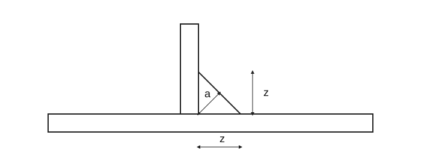

WELDING AND BRAZING
CS
EN
DE
FR
RU

Own explanatory schematic; not a standard manufacturing drawing. Not all table parameters are drawn.
Fillet weld · dimensions and notation
WELDING AND BRAZING
Item
Value / relation
Meaning
Fillet weld throat
a = z/√2
Ideal equal-leg profile, 90° joint, no penetration credit
Effective area
A = a·l_eff
a and effective length l_eff in mm; A in mm²